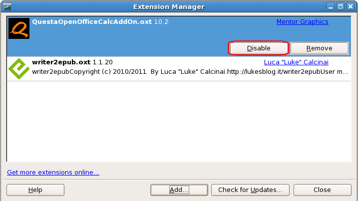

If you want to
disable the extension within OpenOffice/LibreOffice, without removing
the installation, follow the instructions in this section.
Procedure
- From the
OpenOffice/LibreOffice Calc menu bar, choose Tools >
Extension Manager. The Extension Manager dialog appears.
Figure 1. OpenOffice/LibreOffice
Extension Manager Dialog
- In the
dialog, select QuestaOpenOfficeCalcAddOn from the list and click Disable.
- Close both the Extension Manager
dialog and the OpenOffice/LibreOffice Calc program.
- Reopen OpenOffice/LibreOffice calc.